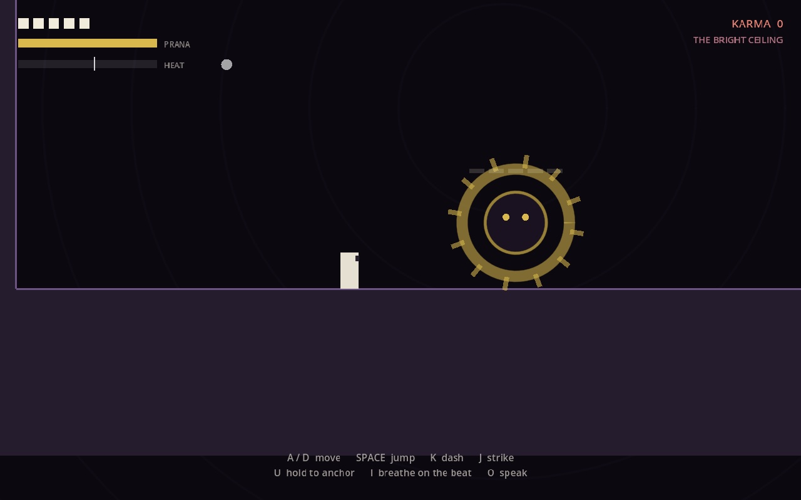

Bardo
A 2D action platformer in the manner of Hollow Knight, set in a modified Tibetan Book of the Dead. Your moveset is a small loadout of yogic practices seated in the chakras, and combat resolves through recognition rather than damage: there is no enemy health bar and no way to kill the deity you face.

Aspects and answers
The deity cycles through phases, and each phase shows an aspect that exactly one practice answers.
- Motion, a cold blue wall of force along the floor, is answered by Anchor, a held stance from the Root Seat.
- Fire, ember-orange heat expanding toward you, is answered by Ember, breath of fire tapped on the beat from the Navel Seat.
- Sound, an expanding brass-gold ring, is answered by The Answering Sound, a mantra from the Throat Seat.
A correct answer adds a segment to the deity's Recognition meter and a wrong one takes a segment away; fill it and the deity dissolves and you take back its practice.
The strike
The dash makes you invulnerable, so every attack can be dodged forever, but dodging earns no recognition. The strike staggers the deity and cancels its turn, which makes it the best way to survive, yet it earns nothing and costs karma: a run made only of strikes survives forever and never finishes. Each interrupted phase also shortens every later warning, down to 55% of its length, so violence makes the deity harder to read.
Prana, heat and karma
- Prana regenerates properly only while you hold Anchor: stillness pays for sound.
- Heat cannot be saved up; it bleeds away, and an off-beat press costs more than an on-beat press gains.
- Karma only accumulates, and it decides which of six realms you fall toward, from The Bright Ceiling down to The Iron Room.
Built on the beat
The rhythm of Ember is read from the audio device rather than from the frame loop, because a frame-driven metronome drifts against what you hear. The room is drawn in coloured rectangles on purpose, with no art and no music.
Godot 4.5
keyboard: move, jump, dash, strike, three practices